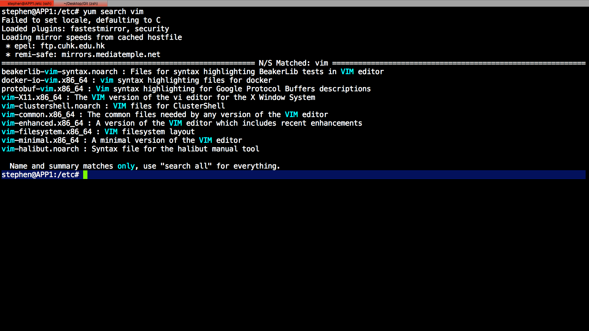

Learning Vim
Nov 24, 2016
a coding life with Vim
OS Environment
|
|
Search available VIM
|
|

Install VIM
|
|
Troubleshooting
Vim didn’t display correct character
- sometimes I will type Chinese character in my file , if text is garbled.
|
|
- always add this line in /etc/vimrc for further use
|
|
- Reference
Understand between termencoding, encoding, fileencoding, fileencodings
more setting information here